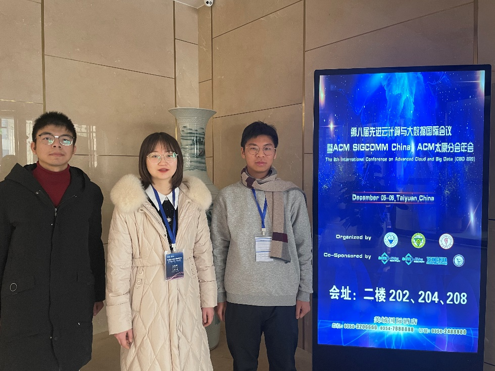

01
城市计算
用时空数据理解城市运行。研究区域表征学习、交通流预测、轨迹建模、城市事件预测与智能决策，让数据驱动城市更高效地运转。
Linking Ubiquities with Connected Knowledge
我们不只关心模型的分数，更关心它如何理解复杂世界、服务真实的人。
LUCK 研究组依托于东南大学计算机科学与工程学院，由金嘉晖副教授（副院长、博士生导师）创立并管理。课题组长期开展城市计算、知识图谱、大数据处理系统与智能应用研究，主持国家自然科学基金面上项目、江苏省自然科学基金项目等多项课题。
我们鼓励从问题出发，把理论洞察转化为可靠的系统和开放的工具。课题组现有博士生 5 人、硕士生 8 人，形成了紧密协作、互助共进的研究团队。
访问导师主页从城市数据到大模型应用，构建能感知、推理并行动的智能系统
用时空数据理解城市运行。研究区域表征学习、交通流预测、轨迹建模、城市事件预测与智能决策，让数据驱动城市更高效地运转。

把多源异构城市信息组织成可查询、可推理的知识网络。研究知识抽取、实体对齐、关系推理与语义融合，支撑城市数据治理与智能问答。

面向 PB 级数据的计算、存储与调度优化。研究大规模图数据处理、异构计算加速与分布式清洗系统，让复杂数据任务更快、更稳、更易用。
研究检索增强生成、记忆管理与工具调用技术，打造能在真实知识环境中可靠工作的 Data Agent。探索大模型路由、多源知识冲突消解与 SQL 查询优化。
孙锡刚、金嘉晖等 · 长时序时空预测的频率条件化方法
孟一凡、金嘉晖等 · 用户评论演化与级联动态对齐
郭振东、金嘉晖等 · 大模型服务定价博弈
孙锡刚、金嘉晖等 · 异构时空交互交通预测
金嘉晖等 · 城市区域预训练与提示学习的图方法
白文超、金嘉晖等 · 单机十亿级图数据清洗系统
黄思源、金嘉晖等 · 多模态兴趣点推荐
金嘉晖等 · 灵活时间间隔的犯罪热点预测
面向多源城市数据的表示、推理和应用，构建城市知识计算基础框架
面向图计算的分布式调度与存储优化方法
结合时空数据挖掘与机器学习，服务城市管理与决策
参与国家级大数据平台关键技术攻关与系统集成
朱浩嘉 · 最佳学生论文奖
课题组博士生获评优秀博士论文
课题组同学在 2023 年度评优中表现突出
课题组硕士毕业生获评校级优秀论文
我们重视每个人的成长节奏，也珍视一起把事情做好的成就感
毕业生就职于华为、腾讯、字节跳动、阿里、滴滴、美团、微软等公司，部分同学赴香港、日本、新加坡等地深造。
本科生、硕士生、博士生，以及任何对研究充满热情的同学，都欢迎联系我们。这里有真实的问题、充分的设备和认真交流的同伴。